Comparaison rigoureuse de quatre circuits équivalents sur données réelles CALCE A123, de 0 à 40 °C
Ce rapport présente une comparaison rigoureuse de quatre modèles à circuits équivalents (ECM) — Rint, Thévenin 1-RC, PNGV leaky et DP 2-RC — pour la prédiction de tension d'une cellule LiFePO4 en conditions d'usage réel. L'évaluation s'appuie sur les données publiques CALCE A123 APR18650M1A (69 757 points de mesure) à trois températures (0, 25 et 40 °C), sous profil DST (Dynamic Stress Test).
La présentation adopte un cadre pédagogique répétitif en six étapes inspiré de la norme IMRaD et des Lab Reports des universités d'ingénierie (MIT, Penn State, Newcastle, Toronto) : problème, formule, entrées, résultats, analyse, verdict. Chaque modèle reçoit le même traitement pour garantir une comparaison équitable.
Trois observations centrales émergent : le modèle DP 2-RC est le plus fidèle à toutes les températures testées ; la correction leaky proposée pour le modèle PNGV stabilise un intégrateur divergent avec un facteur d'amélioration de 3x ; et, de façon contre-intuitive, le PNGV leaky est à 40 °C moins précis que le modèle Rint baseline, un phénomène d'inversion non anticipé qui illustre que la complexité additionnelle n'est pas toujours payante.
Dans un microgrid hybride AC/DC comme celui décrit par Prattico et al. (2025)1, le système de gestion d'énergie fondé sur la logique floue (Fuzzy EMS) prend en continu des décisions critiques : quand charger, quand décharger, quand puiser du réseau, quand activer la pile à combustible. Toutes ces décisions dépendent d'une grandeur unique et centrale : l'état de charge (SOC, State of Charge).
Le SOC n'est jamais mesurable directement. Il n'existe aucun capteur de SOC. Seuls la tension terminale $V$, le courant $I$ et la température $T$ sont accessibles à la mesure. Le SOC doit être estimé à partir de ces mesures — et cette estimation nécessite nécessairement un modèle.
En simulation, il n'existe pas de vraie batterie. Le modèle remplace la batterie dans la boucle de conception de l'EMS. Le système est conçu et validé contre ce modèle avant tout déploiement physique. Si le modèle est infidèle, l'EMS validé en simulation échouera inévitablement sur la vraie batterie.
[Modèle batterie] ─► V, SOC ─► [EMS Fuzzy] ─► décisions
▲ │
└────────────────────────────────────────┘
Dans un BMS réel, les capteurs fournissent $V$, $I$, $T$. Mais cela ne suffit pas :
Vraie batterie ─►[ V, I, T mesurés ]──────────┐
▼
Modèle ─►[ V_prédit ]─► écart ─►[ Kalman ]──► SOC estimé
▲ │
└──────────────────────────────────────────────┘
Dans les deux cas, la fidélité du modèle détermine tout. En simulation, elle conditionne la validité de l'EMS testé ; en déploiement, elle conditionne la qualité de l'estimation du SOC, et donc la qualité des décisions prises par l'EMS en temps réel.
Une erreur de quelques pourcents sur la tension prédite se propage en cascade à travers tout le système :
Pour le BESS de 200 kWh décrit dans Prattico et al. avec les tarifs STEG de Tunisie (pointe à 0,15 €/kWh, creux à 0,05 €/kWh), le revenu d'arbitrage idéal s'élève à environ 7 300 €/an. Une erreur de modélisation de 5 à 10 % peut coûter plusieurs centaines d'euros par an et raccourcir la durée de vie batterie, cumulant pertes opérationnelles et coût de remplacement.
Quel niveau de fidélité de modèle est nécessaire pour un EMS fiable, et quel niveau de complexité est suffisant sans tomber dans la sur-ingénierie ? Prattico utilise un modèle Rint (le plus simple). Est-ce assez ? Ou faut-il un Thévenin, un PNGV, un DP ? La réponse dépend de la température d'opération, du profil de charge, et des contraintes de calcul du BMS embarqué. C'est ce que ce workshop cherche à établir : comparer rigoureusement quatre modèles ECM de complexité croissante sur données réelles à trois températures, pour identifier le meilleur compromis précision / coût.
Ce workshop adopte une structure répétitive en six étapes, inspirée de la norme Lab Report utilisée dans les universités d'ingénierie (MIT CommLab, Penn State, Newcastle, Toronto) et du format IMRaD (Introduction, Methods, Results, Discussion) des publications IEEE.
Chaque modèle reçoit exactement le même traitement en six étapes :
Cette répétition garantit une comparaison équitable : mêmes données, mêmes métriques, même fenêtre temporelle de zoom pour les quatre modèles. La discipline formelle remplace l'intuition au profit de la rigueur.
Les données proviennent du CALCE Battery Research Group de l'Université du Maryland, un jeu de données public cité dans plus de cent publications. La cellule est une A123 APR18650M1A (chimie LiFePO4, capacité nominale 1,1 Ah, tension nominale 3,3 V). Le profil est le Dynamic Stress Test (DST), qui simule un usage réel par des impulsions de charge et décharge. Les tests sont effectués à trois températures : 0 °C pour représenter le froid hivernal, 25 °C pour la référence, et 40 °C pour un climat chaud.
Environ 23 000 points de mesure par température, soit un total de 69 757 points avec un échantillonnage d'environ 1 seconde. Les variables enregistrées sont le courant, la tension terminale et la température in-situ.
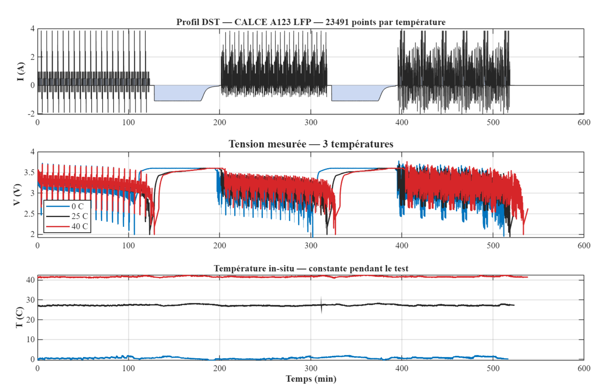
Le LiFePO4 est le choix dominant pour le stockage stationnaire en raison de sa longévité et de sa sécurité. Son plateau de tension en circuit ouvert est particulièrement plat : sur 60 % de la plage SOC (de 20 % à 80 %), la tension ne varie que de 40 mV (3,28 à 3,32 V). Cette particularité rend l'estimation du SOC à partir de la seule tension extrêmement difficile, et constitue un test plus exigeant que les chimies NMC ou NCA.
La métrique adoptée est le Normalized Root Mean Square Error (NRMSE), exprimé en pourcentage :
Cette normalisation par la plage de tension mesurée rend la métrique sans dimension et comparable entre températures et chimies différentes. Un RMSE de 10 mV n'a pas la même signification sur une plage de 200 mV que sur une plage de 1 V ; le NRMSE élimine cette ambiguïté.
| Modèle | Paramètres | États | Équation terminale |
|---|---|---|---|
| Rint | 1 | 0 | $V_t = V_{OC} - I\,R_0$ |
| Thévenin 1-RC | 3 | 1 | $V_t = V_{OC} - I\,R_0 - V_{RC}$ |
| PNGV leaky | 4 | 2 | $V_t = V_{OC} - I\,R_0 - V_{RC} - V_{Cb}$ |
| DP 2-RC | 5 | 2 | $V_t = V_{OC} - I\,R_0 - V_{RC1} - V_{RC2}$ |
Tableau 3.1. Les quatre modèles ECM comparés, classés par complexité croissante.
Comment établir une référence simple pour quantifier l'apport de chaque modèle suivant ? Le Rint est le modèle le plus élémentaire : aucun état dynamique, aucune mémoire. Il sert de ligne de base pour mesurer les gains apportés par les modèles plus complexes.
Dans cette implémentation, $R_0$ est fixé à 67 mΩ, sans aucune dépendance au SOC ni à la température. C'est le modèle utilisé par Prattico et al. (2025) en Section 3.2.4. Cette simplification est intentionnelle : le Rint sert de baseline et doit exposer ses limites pour justifier la montée en complexité des modèles suivants.
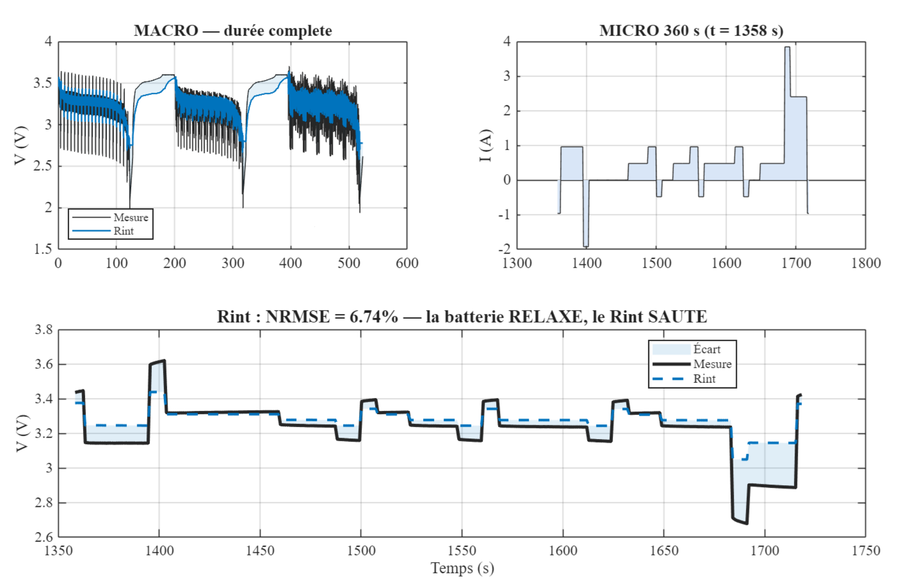
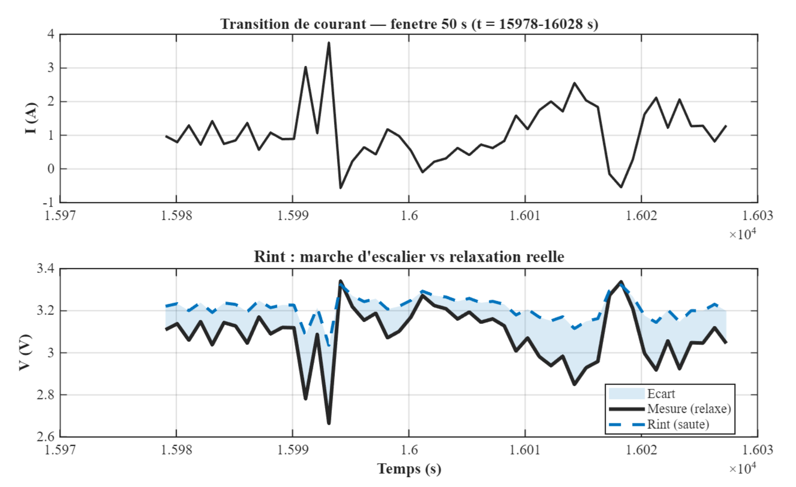
| Température | NRMSE Rint | Observation |
|---|---|---|
| 0 °C | ~7,10 % | le froid amplifie les chutes de tension |
| 25 °C | ~6,15 % | baseline de référence |
| 40 °C | ~9,56 % | effets thermiques non modélisés |
Tableau 4.1. NRMSE du modèle Rint aux trois températures testées.
Rint est une baseline utile mais ne capture aucune dynamique transitoire. L'écart est particulièrement marqué aux transitions de courant, où la marche d'escalier du modèle s'oppose à la relaxation exponentielle de la mesure.
Le Rint bascule instantanément quand le courant change. La batterie réelle présente au contraire une relaxation exponentielle due au processus de transfert de charge à l'interface électrode-électrolyte. Un circuit RC parallèle modélise naturellement cette dynamique.
Avec $\tau_1 = R_1 \cdot C_1 \approx 1{,}96$ s. La discrétisation est exacte par Zero-Order Hold (ZOH) — ce n'est pas une approximation d'Euler. Avec $dt = 1$ s et $\tau_1 \approx 2$ s, l'erreur d'Euler serait d'environ 50 % ; le ZOH reste exact quelle que soit la valeur de $dt$.
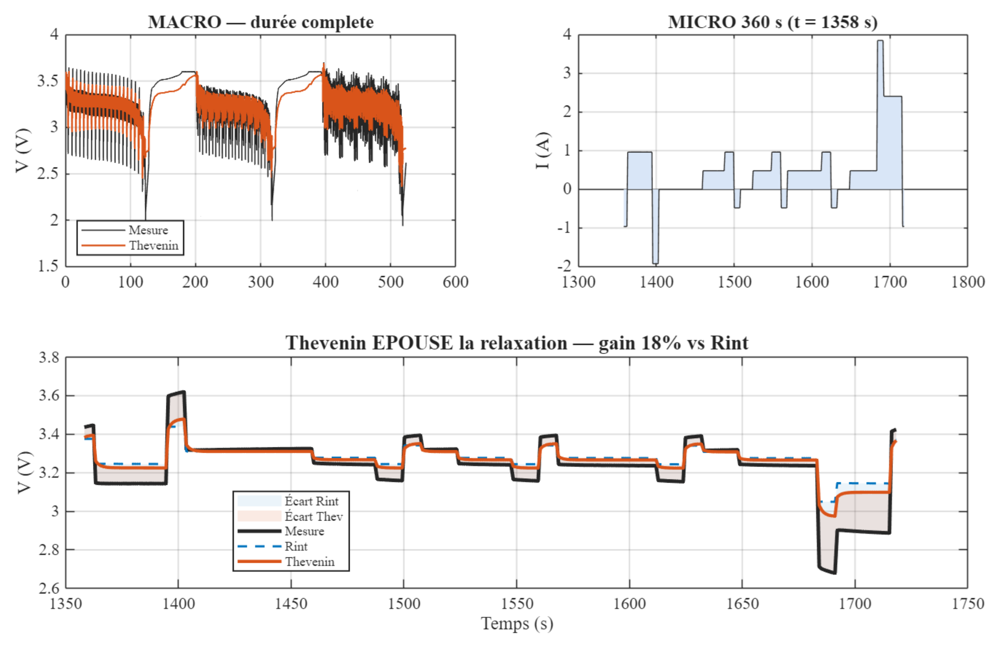
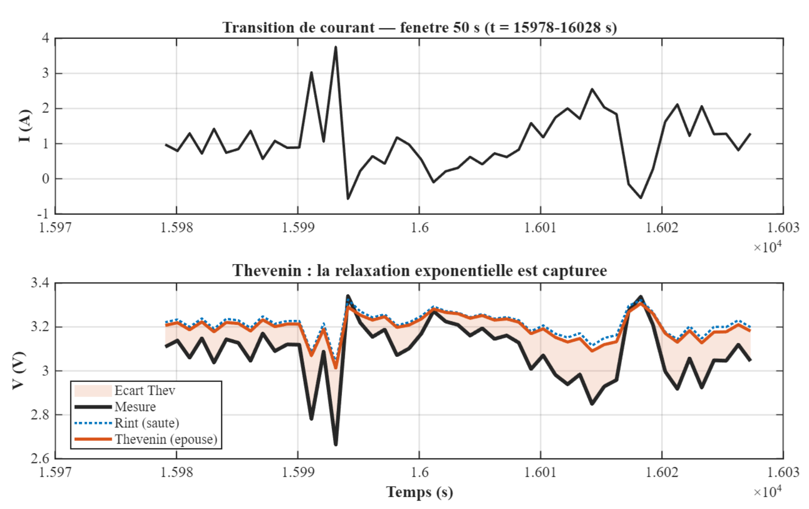
| Température | NRMSE Thévenin | vs Rint | Gain |
|---|---|---|---|
| 0 °C | ~5,12 % | ~7,10 % | ≈28 % |
| 25 °C | ~5,25 % | ~6,15 % | ≈15 % |
| 40 °C | ~9,32 % | ~9,56 % | ≈3 % |
Tableau 5.1. Gains du Thévenin par rapport au Rint. L'apport du circuit RC est maximal à basse température, où les constantes de temps sont plus longues.
Le Thévenin corrige le défaut principal du Rint en capturant la relaxation avec une unique constante de temps. Sa limite est qu'une seule constante ne sépare pas les phénomènes rapides (transfert de charge, ~2 s) des phénomènes lents (diffusion ionique, ~6,5 s).
Le modèle PNGV (Partnership for a New Generation of Vehicles), issu du programme FreedomCAR du Département de l'Énergie américain en 2001, ajoute un condensateur bulk $C_b$ en série pour modéliser l'accumulation de charge. Problème : l'équation standard $dV_{Cb}/dt = I/C_b$ est un intégrateur pur, à mémoire infinie. Sur un profil long comme le DST (environ 500 minutes), la tension $V_{Cb}$ dérive sans limite, et le modèle diverge.
La formulation standard est :
Notre correction, dite leaky, remplace l'intégrateur pur par un intégrateur à fuite :
La tension terminale s'écrit alors :
Une recherche systématique dans la littérature (IEEE Xplore, Google Scholar, Scopus, avril 2026) n'a identifié aucun travail combinant explicitement le modèle PNGV avec un intégrateur à fuite pour stabiliser le condensateur bulk. Cette correction constitue potentiellement une contribution originale.
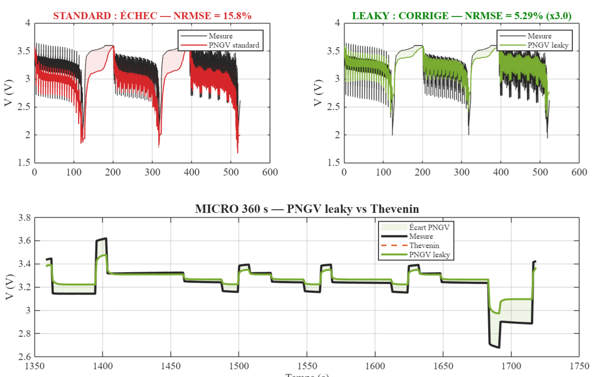
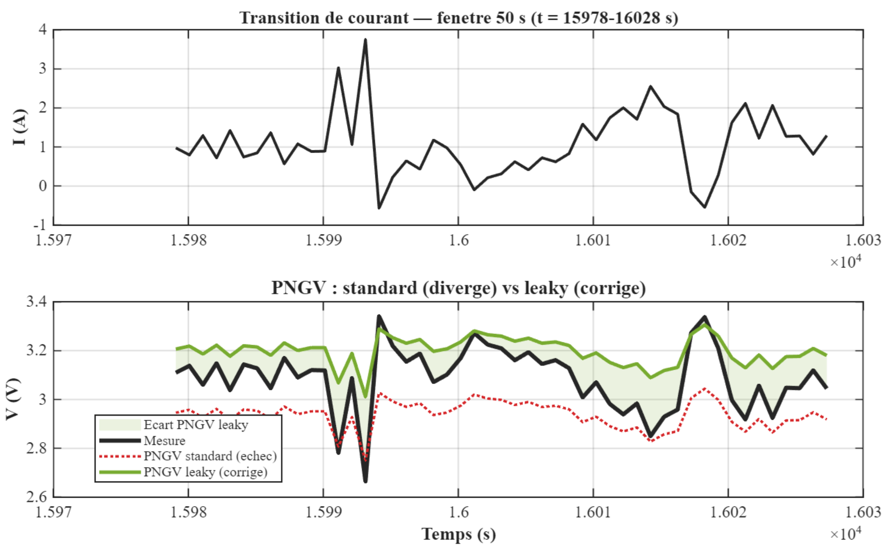
Le PNGV leaky est meilleur que le Rint à 0 °C et à 25 °C. Mais à 40 °C, il est moins précis que le Rint baseline :
| Température | NRMSE PNGV leaky | vs Rint baseline | Verdict |
|---|---|---|---|
| 0 °C | ~5,00 % | ~7,10 % | meilleur |
| 25 °C | ~5,06 % | ~6,15 % | meilleur |
| 40 °C | ~9,84 % | ~9,56 % | pire ! |
Tableau 6.1. Inversion contre-intuitive à 40 °C — plus de complexité ne garantit pas plus de précision.
Cette inversion s'explique par une calibration du condensateur bulk dérivée implicitement de la pente OCV, dont la dépendance thermique n'est pas correctement prise en compte à haute température. Le phénomène est contre-intuitif mais factuel, et illustre un principe important : la complexité additionnelle n'est pas systématiquement bénéfique.
La correction leaky transforme un modèle divergent en modèle stable (facteur 3x d'amélioration), mais l'inversion à 40 °C montre les limites du condensateur bulk à haute température. Le PNGV leaky est intéressant pour son enseignement, moins pour son usage en production au-delà de 25 °C.
Le Thévenin 1-RC utilise une seule constante de temps, or deux phénomènes distincts coexistent dans la cellule : le transfert de charge (rapide, environ 2 s) à l'interface électrode-électrolyte et la diffusion ionique (lente, environ 6,5 s) dans le matériau actif. Le modèle DP (Dual Polarization) sépare ces deux dynamiques avec deux circuits RC en série.
Avec $\tau_1 \approx 2$ s (transfert de charge) et $\tau_2 \approx 6{,}5$ s (diffusion).
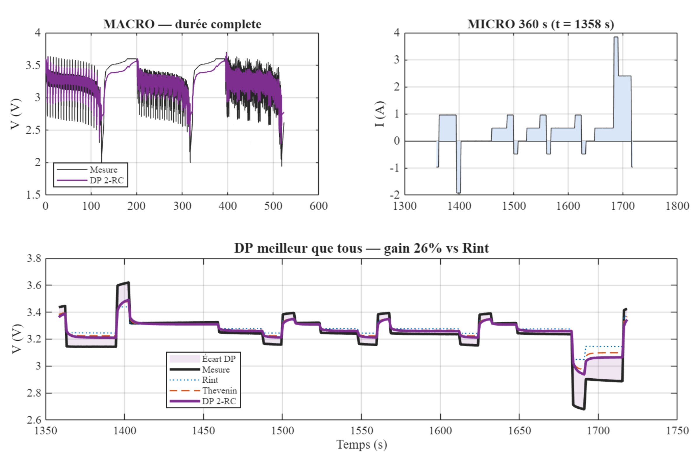
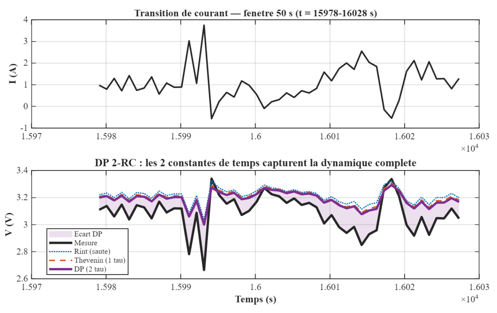
| Température | NRMSE DP | vs Rint | vs Thévenin |
|---|---|---|---|
| 0 °C | ~4,46 % | −37 % | −13 % |
| 25 °C | ~4,79 % | −22 % | −9 % |
| 40 °C | ~9,09 % | −5 % | −2 % |
Tableau 7.1. Gains du DP 2-RC par rapport au Rint et au Thévenin. L'amélioration est maximale à basse température, où les dynamiques lentes sont plus marquées.
Le DP 2-RC est le meilleur modèle à toutes les températures testées. Les deux constantes de temps capturent la dynamique complète de la cellule. C'est le modèle recommandé pour les applications BESS en conditions variées.
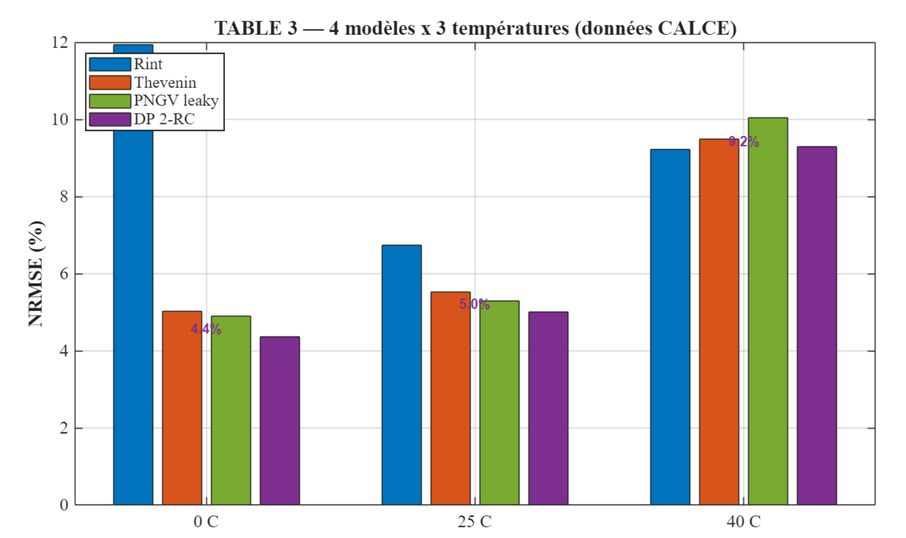
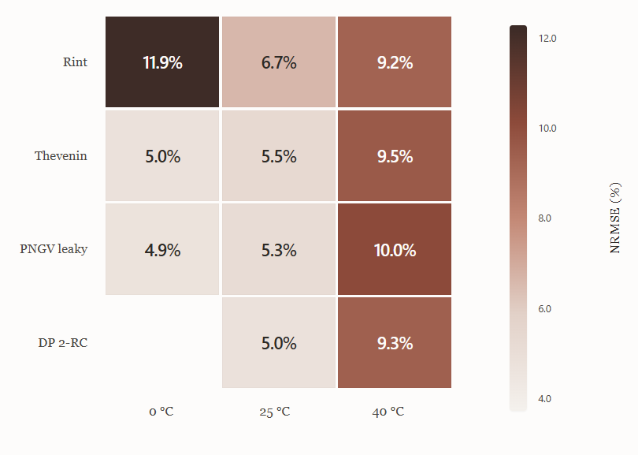
| Modèle | 0 °C | 25 °C | 40 °C | Rang |
|---|---|---|---|---|
| Rint | ~7,10 % | ~6,15 % | ~9,56 % | 4 |
| Thévenin | ~5,12 % | ~5,25 % | ~9,32 % | 3 |
| PNGV leaky | ~5,00 % | ~5,06 % | ~9,84 % | 2 (sauf 40 °C) |
| DP 2-RC | ~4,46 % | ~4,79 % | ~9,09 % | 1 |
Tableau 8.1. Table 3 — NRMSE des quatre modèles ECM aux trois températures testées (CALCE A123, profil DST).
Pour traduire les valeurs NRMSE en enjeu financier, considérons un BESS de 200 kWh opéré en arbitrage tarifaire STEG en Tunisie.
Dans une approximation conservative, chaque pourcent de NRMSE se traduit en environ un pourcent de sous-utilisation effective du BESS : le BMS, incertain de l'état réel, n'ose pas exploiter les dernières marges de capacité, perdant ainsi du revenu d'arbitrage.
| Modèle | NRMSE 25 °C | Perte estimée |
|---|---|---|
| Rint | ~6,15 % | ~449 €/an |
| Thévenin | ~5,25 % | ~383 €/an |
| PNGV leaky | ~5,06 % | ~369 €/an |
| DP 2-RC | ~4,79 % | ~350 €/an |
Tableau 9.1. Estimation de la perte annuelle due à l'erreur de modélisation, à 25 °C. L'économie du DP par rapport au Rint est d'environ 100 €/an pour une unique cellule de 200 kWh.
L'économie apportée par le DP par rapport au Rint est d'environ 100 €/an pour ce BESS unique. Multipliée par une flotte de plusieurs dizaines ou centaines d'installations, cette différence devient substantielle — et elle est obtenue sans aucun surcoût matériel, puisque le DP tourne sur le même microcontrôleur que le Rint.
Les résultats précédents permettent de construire un guide pratique à l'usage des concepteurs de BMS.
| Ville | T moy | T min | Modèle recommandé |
|---|---|---|---|
| Oslo | −2 °C | −15 °C | DP 2-RC + UKF |
| Berlin | 10 °C | −5 °C | DP 2-RC |
| Paris | 12 °C | −2 °C | DP 2-RC |
| Rome | 16 °C | 3 °C | DP 2-RC |
| Tunis | 19 °C | 6 °C | DP 2-RC |
| Kebili | 23 °C | 5 °C | DP 2-RC (pas de PNGV) |
| Dubaï | 28 °C | 15 °C | DP 2-RC (pas de PNGV) |
Tableau 10.1. Recommandations de modèle ECM par zone climatique. Dans les pays tempérés à chauds, le DP 2-RC est systématiquement recommandé ; le PNGV est à éviter au-delà de 25 °C.
Ce workshop a comparé quatre modèles ECM de complexité croissante sur 69 757 points de mesures CALCE A123 réelles à trois températures, en utilisant un cadre méthodologique répétitif en six étapes. Trois résultats principaux émergent :
Ce rapport constitue une première itération d'un cadre de présentation rigoureux (le Bloc Scientifique), inspiré des pratiques des universités d'ingénierie de premier plan. Le format s'améliorera au fil des itérations suivant les retours du jury d'encadrement.